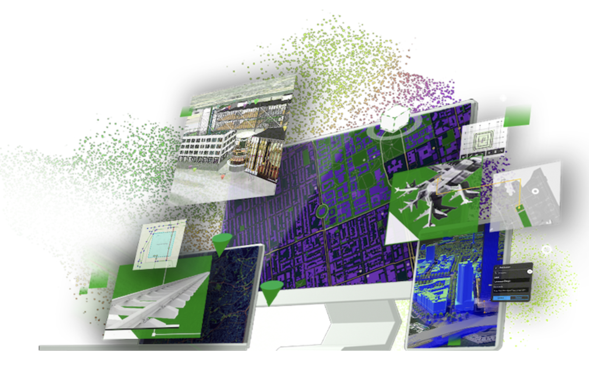
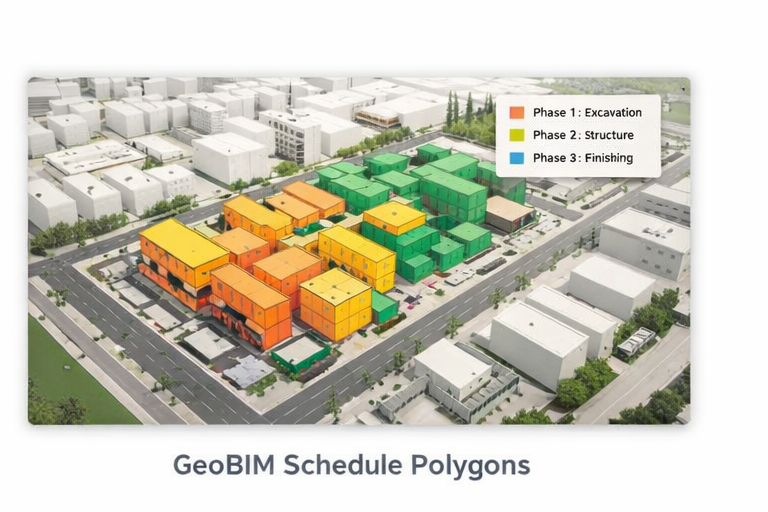
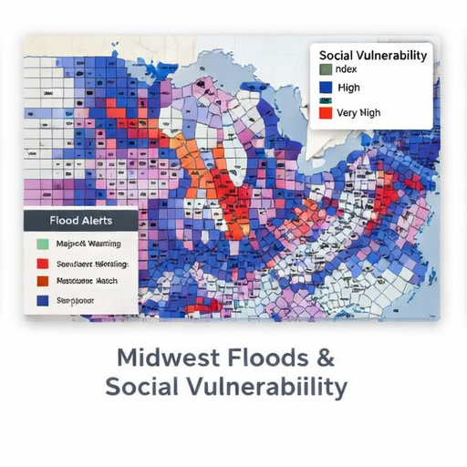

Selected Map & Design Projects

View project →
Interactive Storymap
Narrative-driven interactive map combining spatial analysis, visual hierarchy, and storytelling.
What I did / Tools / Outcome
What I did: Designed narrative flow, map layout, and cartographic styling with spatial QA.
Tools: ArcGIS StoryMaps, ArcGIS Pro, Figma (concepting).
Outcome: Clear, engaging story experience that communicates spatial insight efficiently.

Read blog →
GeoBIM Schedule Polygons
Web-ready GeoBIM visualization using vector polygons to represent construction phases.
What I did / Tools / Outcome
What I did: Built and validated polygon workflows optimized for web visualization.
Tools: ArcGIS Pro, GDAL, Python.
Outcome: Clear phase-based visualization supporting AEC coordination.

Customizing GeoBIM Maps
Layered GeoBIM web maps focused on usability and cartographic clarity.
What I did / Tools / Outcome
What I did: Improved layer organization and visual hierarchy.
Tools: ArcGIS Online, ArcGIS Pro.
Outcome: More intuitive and readable GeoBIM maps.

View analysis →
Midwest Floods & Social Vulnerability
Thematic mapping highlighting flood risk and socially vulnerable populations.
What I did / Tools / Outcome
What I did: Cleaned and validated datasets; supported thematic visualization.
Tools: SQL, ArcGIS.
Outcome: Clear visualization of risk supporting data storytelling.

Aura by Paula — Creative Direction
Visual storytelling and interaction design for a lifestyle brand.
What I did / Tools / Outcome
What I did: Led creative direction, layout, and narrative design.
Tools: Figma, Adobe Creative Suite.
Outcome: Cohesive, modern digital brand experience.